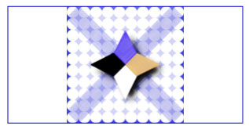
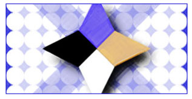

Практическое руководство. Сохранение пропорций изображения, используемого в качестве фона
В этом примере показано, как использовать Stretch свойство ImageBrush чтобы сохранить пропорции изображения.
По умолчанию, при использовании ImageBrush для закраски области, содержимое этого объекта растягивается для полного заполнения области вывода. Если выходная область и изображение имеют разные пропорции, изображение искажается при таком растягивании.
Чтобы сделать ImageBrush сохранение пропорций изображения, задайте Stretch свойства Uniform или UniformToFill.
Пример
В следующем примере используется два ImageBrush объекты для закраски двух прямоугольников. Каждый прямоугольник имеет размер 300 на 150 пикселей и каждый содержит изображение размером 300 на 300 пикселей. Stretch Первой кисти задано значение Uniformи Stretch второй кисти задано значение UniformToFill.
using System;
using System.Windows;
using System.Windows.Controls;
using System.Windows.Media.Imaging;
using System.Windows.Media;
using System.Windows.Shapes;
namespace Microsoft.Samples.Graphics.UsingImageBrush
{
/// <summary>
/// Demonstrates different ImageBrush Stretch settings.
/// </summary>
public class StretchModes : Page
{
public StretchModes()
{
// Create an ImageBrush with its Stretch
// property set to Uniform. The image it
// contains will be expanded as much as possible
// to fill the output area while still
// preserving its aspect ratio.
ImageBrush uniformBrush = new ImageBrush();
uniformBrush.ImageSource =
new BitmapImage(new Uri("sampleImages\\square.jpg", UriKind.Relative));
uniformBrush.Stretch = Stretch.Uniform;
// Freeze the brush (make it unmodifiable) for performance benefits.
uniformBrush.Freeze();
// Create a rectangle and paint it with the ImageBrush.
Rectangle rectangle1 = new Rectangle();
rectangle1.Width = 300;
rectangle1.Height = 150;
rectangle1.Stroke = Brushes.MediumBlue;
rectangle1.StrokeThickness = 1.0;
rectangle1.Fill = uniformBrush;
// Create an ImageBrush with its Stretch
// property set to UniformToFill. The image it
// contains will be expanded to completely fill
// the rectangle, but its aspect ratio is preserved.
ImageBrush uniformToFillBrush = new ImageBrush();
uniformToFillBrush.ImageSource =
new BitmapImage(new Uri("sampleImages\\square.jpg", UriKind.Relative));
uniformToFillBrush.Stretch = Stretch.UniformToFill;
// Freeze the brush (make it unmodifiable) for performance benefits.
uniformToFillBrush.Freeze();
// Create a rectangle and paint it with the ImageBrush.
Rectangle rectangle2 = new Rectangle();
rectangle2.Width = 300;
rectangle2.Height = 150;
rectangle2.Stroke = Brushes.MediumBlue;
rectangle2.StrokeThickness = 1.0;
rectangle2.Margin = new Thickness(0, 10, 0, 0);
rectangle2.Fill = uniformToFillBrush;
StackPanel mainPanel = new StackPanel();
mainPanel.Children.Add(rectangle1);
mainPanel.Children.Add(rectangle2);
Content = mainPanel;
Background = Brushes.White;
Margin = new Thickness(20);
Title = "ImageBrush Stretch Modes";
}
}
}
Ниже показан результат выполнения первой кисти, у которой Stretch параметр Uniform.

На следующем рисунке показаны выходные данные второй кисти, у которой Stretch параметр UniformToFill.

Обратите внимание, что Stretch свойство ведет себя идентично для других TileBrush объектов, то есть для DrawingBrush и VisualBrush. Дополнительные сведения о ImageBrush , а другой TileBrush объектов, см. в разделе Рисование с помощью изображений, рисунков и визуальных элементов.
Обратите внимание, что, несмотря на то что Stretch свойство, по-видимому, укажите как TileBrush содержимое увеличивается до размеров области вывода, оно фактически указывает как TileBrush растягивается для заполнения базового фрагмента содержимого. Дополнительные сведения см. в разделе TileBrush.
Данный пример кода является частью большего примера, предоставляемый для ImageBrush класса. Полный пример см. в разделе пример использования кистей.